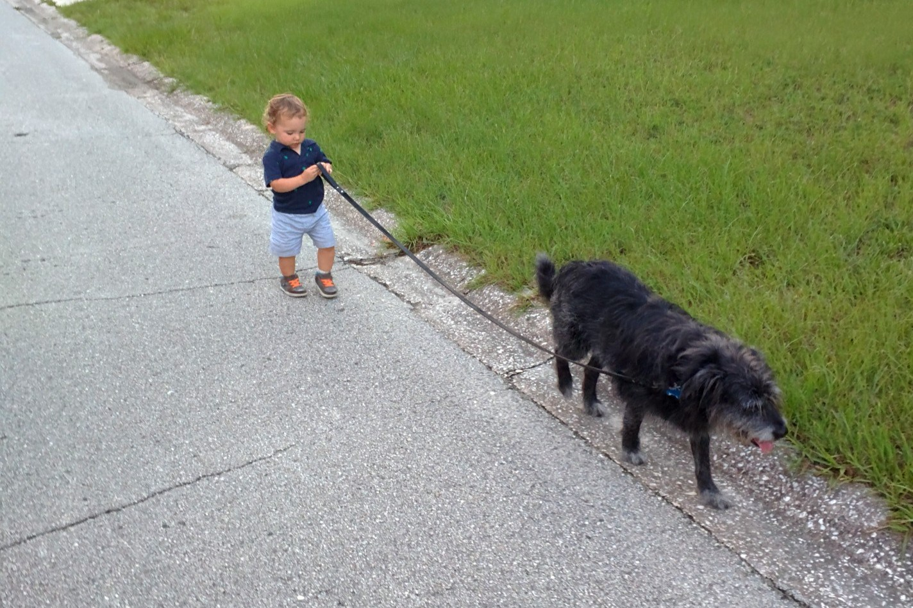

Hi everyone! I'm Tony.
I live in Jacksonville, FL
I live in Jacksonville, FL
I'm a native Floridian born in Miami and currently living in Jacksonville with my wife, son and three dogs. They certainly keep me busy, but I wouldn't have it any other way! I currently work full time in the insurance industry, but I am ready to make a change and begin working in tech.
I have been building sites in my spare time off-and-on since I was 13 years old. They were terrible things with tiled animated Gifs as the background. Yuck! I still don't claim to have an eye for design, but I think I'm getting a bit better lately. Please let me know what you think in Slack or through the social media links in the footer.
I look forward to learning and polishing my skills in the following arenas:
I bring a competitive nature and an appetite for excellence to any task I set before myself. I look forward to developing my programming skills.
The reason I wake up in the morning (literally)!